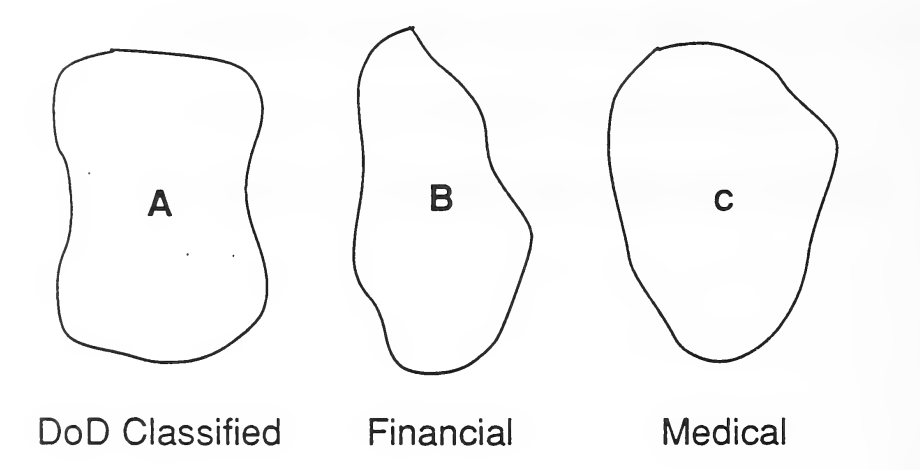
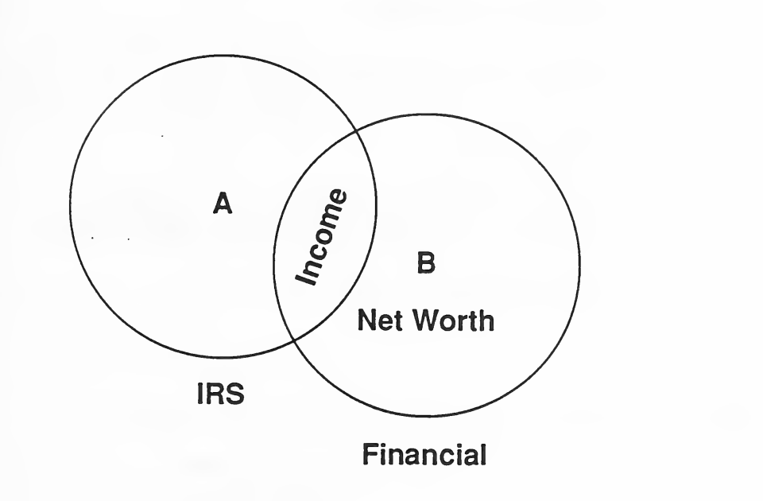

NIST IR 4362 日本語訳
英語タイトル : Security Labels for Open Systems: an Invitational Workshop日本語タイトル : オープンシステムのためのセキュリティラベル：招待ワークショップ
公開日 : 1990-06-01
原文URL : https://csrc.nist.gov/pubs/ir/4362/final
原本 PDF : https://doi.org/10.6028/NIST.IR.4362
訳文 : 有志による非公式の日本語訳（AI による翻訳とレビュー）。全 243 段落のうち 223 段落を翻訳済み（原文取得日 : 2026-10-31）
[要約] NIST IR 4362 は、オープンシステムのセキュリティラベルに関する招待ワークショップの報告書で、Noel Nazario が議長を務めました。1990 年 5 月 30 日と 31 日に、NIST のプロトコルセキュリティグループがセキュリティラベルに関するワークショップを開催しました。米国政府、産業界、英国から 35 名の代表が 2 日間集まり、オープンシステムのセキュリティラベルについて議論しました。議論は、「エンドシステム」におけるラベルの一般論から、安全な開放型システム間相互接続（OSI）におけるラベルというより具体的な問題へと進み、2 日間に共有された情報が本報告書に記録されています。
NISTIR 4362
NISTIR 4362
SECURITY LABELS FOR OPEN SYSTEMS AN INVITATIONAL WORKSHOP
オープンシステムのためのセキュリティラベル: 招待ワークショップ
Noel Nazario Chairman
Noel Nazario 議長
U.S. DEPARTMENT OF COMMERCE National Institute of Standards and Technology National Computer Systems Laboratory Gaithersburg, MD 20899
米国商務省 米国国立標準技術研究所（NIST） 国立コンピューターシステム研究所（NCSL） Gaithersburg, MD 20899
U.S. DEPARTMENT OF COMMERCE Robert A. Mosbacher, Secretary NATIONAL INSTITUTE OF STANDARDS AND TECHNOLOGY John W. Lyons, Director
米国商務省 Robert A. Mosbacher 長官 米国国立標準技術研究所（NIST） John W. Lyons 所長
NISTIR 4362
NISTIR 4362
SECURITY LABELS FOR OPEN SYSTEMS AN INVITATIONAL WORKSHOP
オープンシステムのためのセキュリティラベル: 招待ワークショップ
Noel Nazario Chairman
Noel Nazario 議長
U.S. DEPARTMENT OF COMMERCE National Institute of Standards and Technology National Computer Systems Laboratory Gaithersburg, MD 20899
米国商務省 米国国立標準技術研究所（NIST） 国立コンピューターシステム研究所（NCSL） Gaithersburg, MD 20899
June 1990
1990 年 6 月
U.S. DEPARTMENT OF COMMERCE Robert A. Mosbacher, Secretary NATIONAL INSTITUTE OF STANDARDS AND TECHNOLOGY John W. Lyons, Director
米国商務省 Robert A. Mosbacher 長官 米国国立標準技術研究所（NIST） John W. Lyons 所長
Table of Contents
目次
•要旨
•"DoE Proposal for Security Labeling in GOSIP", C. Douglas Brown (Sandia National Laboratories)
•"DoE Proposal for Security Labeling in GOSIP", C. Douglas Brown (Sandia National Laboratories)
•"The Secure Network Password", A.A. Eshgh, P.H. Wiedemann (SSDS, Inc.)
•"The Secure Network Password", A.A. Eshgh, P.H. Wiedemann (SSDS, Inc.)
•"Labelling Communicated Data In OSI", C. Gray Girling (Top Express Ltd., U.K.)
•"Labelling Communicated Data In OSI", C. Gray Girling (Top Express Ltd., U.K.)
•"Security Labels in Open Systems" (Position Paper), Russell Housley (Xerox Corporation)
•"Security Labels in Open Systems"（ポジションペーパー）、Russell Housley (Xerox Corporation)
•"Security Labels in Open Systems" (Presentation Slides), Russell Housley (Xerox Corporation)
•"Security Labels in Open Systems"（発表スライド）、Russell Housley (Xerox Corporation)
•"Commercial IP Security Option" (Position Paper), John Linn (Digital Equipment Corporation)
•"Commercial IP Security Option"（ポジションペーパー）、John Linn (Digital Equipment Corporation)
•"Commercial IP Security Option" (Presentation Paper), John Linn (Digital Equipment Corporation)
•"Commercial IP Security Option"（発表資料）、John Linn (Digital Equipment Corporation)
•"Security Labels Position Paper", Bill Maimone (Oracle Corporation)
•"Security Labels Position Paper", Bill Maimone (Oracle Corporation)
•"Security Labels, End-to-End Encryption, and Internets", Phil Mellinger (MITRE Corporation)
•"Security Labels, End-to-End Encryption, and Internets", Phil Mellinger (MITRE Corporation)
•"Position Paper", Nick Pope (Logica; U.K.)
•"Position Paper", Nick Pope (Logica; U.K.)
•"Information Identification and Protection", Warren Schmitt (Sears Technology Services)
•"Information Identification and Protection", Warren Schmitt (Sears Technology Services)
•"Security Labels for the Defense Message System", Robert W. Shirey(MITRE Corporation)
•"Security Labels for the Defense Message System", Robert W. Shirey (MITRE Corporation)
•Position Paper, Gerald Short (TRW)
•ポジションペーパー、Gerald Short (TRW)
•"An Approach for Labeling in Open, Heterogeneous, Distributed Systems", N. Vasudevan (IBM)
•"An Approach for Labeling in Open, Heterogeneous, Distributed Systems", N. Vasudevan (IBM)
•"Position Paper Information Labels for NIST Security Labels for Open Systems Workshop", John P.L. Woodward (MITRE Corporation)
•"Position Paper Information Labels for NIST Security Labels for Open Systems Workshop", John P.L. Woodward (MITRE Corporation)
•"Background on Extended Security Options and Compartments in IP/CLNP Labels" (Presentation Slides), John P.L. Woodward (MITRE Corporation)
•"Background on Extended Security Options and Compartments in IP/CLNP Labels"（発表スライド）、John P.L. Woodward (MITRE Corporation)
Abstract
要旨
On May 30 and 31, 1990 the Protocol Security Group at NIST held a Workshop on Security Labels. Thirty-Five representatives from the U.S. Government, industry, and the United Kingdom gathered for two days to discuss security Labels for open systems. The discussion went from the generalities of labels in "end systems" to the more specific issue of labels in secure Open Systems Interconnection (OSI). The information shared during the two days of discussion is documented in these proceedings.
1990 年 5 月 30 日と 31 日に、NIST のプロトコルセキュリティグループが、セキュリティラベルに関するワークショップを開催しました。米国政府、産業界、英国から 35 人の代表者が 2 日間にわたって集まり、オープンシステムのセキュリティラベルについて議論しました。議論は、「エンドシステム」におけるラベルの一般論から、安全なオープンシステム間相互接続（OSI）におけるラベルという、より具体的な問題に至りました。2 日間の議論で共有された情報は、本会議録に記録されています。
Key Words: Government open systems interconnection profiles; Integrity; Network; open systems interconnection; security labels; trust
キーワード: 政府 OSI プロファイル、完全性、ネットワーク、開放型システム間相互接続、セキュリティラベル、信頼
Papers are contributions of the authors and do not necessarily represent the views of NIST.
論文は著者による寄稿であり、必ずしも NIST の見解を表すものではありません。
Workshop Report
ワークショップ報告
Robert Rosenthal (NIST) welcomed the attendees. He indicated that the group would first look at labels in general and then focus on the role of labels in Networks. Mr. Rosenthal expects to incorporate the output of the workshop into the U.S. Government Open Systems Interconnection Profile (GOSIP) FIPS PUB 146 (3). He then introduced the chairman of the workshop, Noel Nazario.
Robert Rosenthal（NIST）が出席者を歓迎しました。彼は、グループがまずラベル全般を検討し、次にネットワークにおけるラベルの役割に焦点を当てると述べました。Mr. Rosenthal は、ワークショップの成果を、米国政府 OSI プロファイル（GOSIP）FIPS PUB 146 (3) に取り込むことを見込んでいます。続いて彼は、ワークショップの議長である Noel Nazario を紹介しました。
Mr. Nazario thanked everyone for their written contributions. After reviewing the workshop agenda and asking all attendees to introduce themselves, he introduced the technical presentations.
Mr. Nazario は、全員の書面での寄稿に謝意を述べました。ワークショップの議事次第を確認し、全出席者に自己紹介を求めた後、技術発表を紹介しました。
Dr. Dennis Branstad (NIST) gave a top down view of the labelling problem. He talked about the European Computer Manufacturing Association's (ECMA) "Security in Open Systems Framework, TR 46", and the ECMA Data Elements and Service Definitions". Dr. Branstad talked about security policy domains and users within the security domain. He described the relationship of labels between the domains and the requirement of domain rules. The existence of these domains introduces the problem of "across-domain" communication. This requires a method of translation. From his perspective, the purpose of the workshop was to look at the content of security labels and come up with a common generic format. This generic format should be tailored to different domains using registration authorities to maintain consistency.
Dr. Dennis Branstad（NIST）は、ラベル付けの問題をトップダウンの視点で述べました。彼は、European Computer Manufacturing Association（ECMA）の「Security in Open Systems Framework, TR 46」と、ECMA の Data Elements and Service Definitions について話しました。Dr. Branstad は、セキュリティポリシードメインと、セキュリティドメイン内の利用者について話しました。彼は、ドメイン間のラベルの関係と、ドメインの規則の要件を説明しました。これらのドメインの存在により、「ドメインをまたぐ」通信という問題が生じます。これには変換の方法が必要です。彼の見方では、ワークショップの目的は、セキュリティラベルの内容を検討し、共通の汎用的な形式を考え出すことでした。この汎用的な形式は、一貫性を維持するために登録機関を使って、異なるドメインに合わせて調整すべきです。
Dr. Branstad also mentioned that ECMA has associated attributes with users, subjects, and objects by means of labels. The definition of the information in a label and of the defining authority are yet to be determined. NIST is in the process of studying the possibility of becoming a National Federal Registering Authority.
Dr. Branstad はまた、ECMA がラベルによって、利用者、サブジェクト、オブジェクトに属性を関連づけていると述べました。ラベルに含める情報と、それを定義する機関の定義は、まだ決まっていません。NIST は、国の連邦登録機関になる可能性を検討している最中です。
Three security services are associated with a labelling scheme: confidentiality, integrity, and availability (C, I, A). Some felt that since there are no rule-based mechanisms to enforce availability, it should be handled as a Quality of Service (QOS) attribute.
ラベル付けの方式には、機密性、完全性、可用性（C、I、A）の 3 つのセキュリティサービスが関連します。可用性を強制する規則ベースの仕組みはないため、可用性はサービス品質（QOS）属性として扱うべきだと考える人もいました。
David Chizmadia (NCSC) talked about the purpose of NCSC's labelling guideline for end systems. In his presentation he talked about the needs of the user community. He also discussed the pros and cons of labels and their implementation.
David Chizmadia（NCSC）は、NCSC のエンドシステム向けラベル付けガイドラインの目的について話しました。発表では、利用者コミュニティのニーズを取り上げました。また、ラベルとその実装の長所と短所についても論じました。
Phil Mellinger (MITRE) gave a talk on the Blacker network front end (BFE) and how it makes access control decisions based on the Internet Protocol Security Option (IPSO) labels.
Phil Mellinger（MITRE）は、Blacker ネットワークフロントエンド（BFE）と、BFE がインターネットプロトコルセキュリティオプション（IPSO）のラベルに基づいてアクセス制御の判断を行う仕組みについて講演しました。
Some suggested the integration of a restricted routing service. Mr. Mellinger indicated that the BFE does not make routing decisions.
制限付きのルーティングサービスを統合してはどうかという提案がありました。Mr. Mellinger は、BFE はルーティングの判断を行わないと述べました。
Other points made in Mr. Mellinger's presentation were:
Mr. Mellinger の発表で述べられたその他の論点は、次のとおりです。
•Policy should be established by the customer,
•ポリシーは顧客が確立すべきである
•Standardize while preserving flexibility,
•柔軟性を保ちながら標準化する
•Determine label content,
•ラベルの内容を決定する
•Use multiple authorities for a data label,
•データラベルに複数の機関を使う
•Determine how end-systems should deal with authorities,
•エンドシステムが機関をどのように扱うべきかを決定する
•Define a security policy and labels that fit RFC-1038, and
•RFC-1038 に適合するセキュリティポリシーとラベルを定義する
•Access rights should not be carried in the label.
•アクセス権はラベルに含めるべきではない
John Linn (Digital) presented "Issues on the Commercial Internet Protocol Security Option (CIPSO)." He explained how the original IPSO is oriented towards classified requirements and does not satisfy the needs of the commercial user. Another point he made is the need to define labeling authorities to accommodate different security policies.
John Linn（Digital）は、「Issues on the Commercial Internet Protocol Security Option (CIPSO)」を発表しました。彼は、元の IPSO が機密指定の要件に向けたものであり、商用の利用者のニーズを満たさないことを説明しました。彼が述べたもう 1 つの点は、異なるセキュリティポリシーに対応するために、ラベル付けを行う機関を定義する必要があるということです。
Ali Eshgh (SSDS) talked about a decentralized network security administration that requires an agreed upon set of standards to be useful and effective. A network passport concept was described where each domain is responsible for authorizing traffic. Each user within a domain has a token. Users also have a visa that is unforgettable.
Ali Eshgh（SSDS）は、有用かつ効果的であるには合意された標準の集合を必要とする、分散型のネットワークセキュリティ管理について話しました。各ドメインがトラフィックの認可に責任を持つ、ネットワークパスポートの概念が説明されました。ドメイン内の各利用者はトークンを持ちます。利用者はまた、偽造できないビザも持ちます。
Russell Housley (Xerox) raised the issue of avoiding availability, authorization and billing codes in security labels. He stated that availability is a Quality of Service. All this has to do with defining computer security but, should we shove it all under labeling?
Russell Housley（Xerox）は、セキュリティラベルに可用性、認可、課金のコードを含めることを避けるという論点を提起しました。彼は、可用性はサービス品質であると述べました。これらはすべて、コンピューターセキュリティを定義することに関わるものですが、すべてをラベル付けの下に押し込むべきでしょうか。
Bill Maimone (ORACLE) talked about the database community's concern with end-system and network security labels as they apply in distributed processing. ORACLE's products use security label information directly from the operating system. Database labels need to be consistent and his company would like consistency in operating system labels as well. An application level standard should be encouraged. Mr. Maimone's position paper outlines the role of secrecy labels as used by a hierarchically subset database management system and the subsequent requirements for standardization of labels.
Bill Maimone（ORACLE）は、分散処理に適用される場合のエンドシステムとネットワークのセキュリティラベルについて、データベースコミュニティが抱く懸念を話しました。ORACLE の製品は、オペレーティングシステムからセキュリティラベルの情報を直接使います。データベースのラベルは一貫している必要があり、同社は、オペレーティングシステムのラベルにも一貫性を求めています。アプリケーションレベルの標準を奨励すべきです。Mr. Maimone のポジションペーパーは、階層的な部分集合のデータベース管理システムで使われる機密ラベルの役割と、その後のラベルの標準化の要件を概説しています。
Dr. Robert Shirey (MITRE) reviewed the contents of his position paper that talks about various components of the Defense Message System (DMS) and the three implementation phases the DMS project.
Dr. Robert Shirey（MITRE）は、国防メッセージシステム（DMS）のさまざまな構成要素と、DMS プロジェクトの 3 つの実装フェーズについて述べた自身のポジションペーパーの内容を紹介しました。
John Woodward (MITRE) discussed information labels, a concept developed under the Defense Intelligence Agency/MITRE Compartmented Mode Workstation (CMW) project. By using information labels it is possible to track the classification history of data to provide safeguards and avoid overclassification. As part of his presentation Mr. Woodward showed an example of a language for defining label encodings that could be used in policy generation.
John Woodward（MITRE）は、Defense Intelligence Agency/MITRE の区分モードワークステーション（CMW）プロジェクトで開発された概念である、情報ラベルについて論じました。情報ラベルを使うことで、データの機密区分の履歴を追跡し、保護対策を講じ、過剰な機密指定を避けることができます。発表の一部として、Mr. Woodward は、ポリシーの生成に使えるラベルのエンコーディングを定義する言語の例を示しました。
Gene Troy (NIST) talked about C, I, A as pertinent to security labels. Unclassified confidentiality is similar to classified problems. The question raised is, how to describe confidentiality?
Gene Troy（NIST）は、セキュリティラベルに関連するものとしての C、I、A について話しました。非機密の機密性は、機密指定の問題と似ています。提起された問いは、機密性をどのように記述するのか、というものです。
Dennis Steinauer (NIST) reviewed security labels as related to the Portable Operating Systems Interface (POSIX). He stressed the need for a standard labeling mechanism.
Dennis Steinauer（NIST）は、ポータブルオペレーティングシステムインターフェース（POSIX）に関連するセキュリティラベルを概観しました。彼は、標準のラベル付けの仕組みが必要であることを強調しました。
Nick Pope (Logica, U.K.) talked about security label work in Europe. Some of the points he covered are:
Nick Pope（Logica、英国）は、欧州でのセキュリティラベルの作業について話しました。彼が取り上げた点には、次のものがあります。
•Security policy ID
•セキュリティポリシー ID
•Classification
•機密区分
•Primary Mark
•プライマリマーク
•Security Category (object identifier)
•セキュリティカテゴリ（オブジェクト識別子）
•Label information be carried in 2 ways, in a label or as a Quality of Service parameter.
•ラベルの情報は、ラベルの中、またはサービス品質パラメーターとして、2 通りの方法で運びます。
•Security framework
•セキュリティフレームワーク
Warren Schmitt (Sears Technology Services) presented the security needs of commercial institutions. Mr. Schmitt pointed out risk or exposure areas that businesses need to protect against the most. He also stated that the commercial community's concern about confidentiality, integrity, and availability is evenly spread and not necessarily focused on one or two of these.
Warren Schmitt（Sears Technology Services）は、商用機関のセキュリティのニーズを発表しました。Mr. Schmitt は、企業が最も防御する必要があるリスクまたはエクスポージャーの領域を指摘しました。また、商用コミュニティの機密性、完全性、可用性への関心は均等に分散しており、必ずしもそのうちの 1 つか 2 つに集中していないと述べました。
Day one ended after Mr. Schmitt's presentation.
初日は、Mr. Schmitt の発表で終了しました。
Dr. Stuart Katzke (NIST) summarized the relevant points of the previous day's discussion. He talked about the wide acceptance of a relationship between security labels and confidentiality but pointed out that their relationship with integrity and availability is still being debated. In addition he made the following points:
Dr. Stuart Katzke（NIST）は、前日の議論の関連する論点をまとめました。彼は、セキュリティラベルと機密性との関係は広く受け入れられているものの、完全性や可用性との関係はまだ議論されていると述べました。さらに彼は、次の点を指摘しました。
•Not all data units need a label,
•すべてのデータ単位にラベルが必要なわけではない
•There is a relationship between the form of the label and the security domain in which the host resides,
•ラベルの形式と、ホストが置かれているセキュリティドメインの間には関係がある
•The function of the different OSI layers should be considered when defining a labeling scheme, and
•ラベル付けの方式を定義する際は、OSI の各層の機能を考慮すべきである
•Trust is required on the label itself.
•ラベル自体に対する信頼が必要である
Russell Housley (Xerox) presented his views on security labels and their placement within the OSI architecture. He provided definitions for data security and security labels. Mr. Housley also described types of protection using fundamental security models. Integrity and confidentiality in labels were discussed along with reasons for treating availability as a QOS parameter. He ended with an analysis of the pros and cons of security labels at each layer.
Russell Housley（Xerox）は、セキュリティラベルと、OSI アーキテクチャ内でのその配置についての見解を発表しました。彼は、データセキュリティとセキュリティラベルの定義を示しました。Mr. Housley はまた、基本的なセキュリティモデルを用いた保護の種類についても説明しました。ラベルにおける完全性と機密性が、可用性を QOS パラメーターとして扱う理由とともに議論されました。彼は、各層におけるセキュリティラベルの長所と短所の分析で締めくくりました。
Douglas Brown (Department of Energy) presented DoE's approach to IP Security Labeling which has been revised as a proposal for GOSIP (CLNP) labels. Mr. Brown also provided a review of the work done by the Trusted Systems Interoperability Group (TSIG) on the Commercial Internet Protocol Security Option (CIPSO).
Douglas Brown（Department of Energy）は、GOSIP（CLNP）のラベルに向けた提案として改訂された、DoE の IP セキュリティラベル付けのアプローチを発表しました。Mr. Brown はまた、Trusted Systems Interoperability Group（TSIG）が Commercial Internet Protocol Security Option（CIPSO）について行った作業の概要も紹介しました。
Mr. Brown provided the following background information on the DoE effort:
Mr. Brown は、DoE の取組みに関する次の背景情報を示しました。
DoE chartered a Security Labeling Standard Working Group which adopted and extended the Revised IP Security Option defined by RFC 1038 in the following ways:
DoE は、Security Labeling Standard Working Group を設置し、同グループは、RFC 1038 で定義された改訂版 IP セキュリティオプションを、次の点で採用し拡張しました。
•Used Basic Security Option without change (4 labels U, C, S, TS)
•基本セキュリティオプションを変更せずに使用しました（4 つのラベル U、C、S、TS）。
•Adopted an additional Protection Authority Code (4).
•追加の保護機関コード（4）を採用しました。
•Added a DoE protection Flag.
•DoE の保護フラグを追加しました。
A reason to choose this approach was that the DNSIX interface specification developed by the Mitre Corporation specified the use of the Basic Security Option to communicate security levels.
このアプローチを選んだ理由の 1 つは、Mitre Corporation が開発した DNSIX インターフェース仕様が、セキュリティレベルを伝達するために基本セキュリティオプションを使うことを規定していたことでした。
Mr. Brown also gave a description of the DoE basic security model and the justification for its use.
Mr. Brown はまた、DoE の基本セキュリティモデルの説明と、その使用の根拠も述べました。
John Woodward provided background information on the Extended Security Option (ESO) and compartments in IP/CLNP labels. He explained the meaning of several acronyms and the processing of security labels in Intelligence Systems.
John Woodward は、拡張セキュリティオプション（ESO）と、IP/CLNP ラベルにおけるコンパートメントについての背景情報を示しました。彼は、いくつかの略語の意味と、インテリジェンスシステムにおけるセキュリティラベルの処理を説明しました。
N. Vasudevan from IBM talked about a labeling approach for distributed systems. He covered end system labels moving all the way to security labels in open heterogeneous networks.
IBM の N. Vasudevan は、分散システムのラベル付けのアプローチについて話しました。彼は、エンドシステムのラベルから、オープンな異種ネットワークにおけるセキュリティラベルまで、ラベルがどのように移行するかを取り上げました。
Open Discussion:
自由討論
Noel Nazario opened a discussion to obtain a few points of agreement to be stated as output of the workshop.
Noel Nazario は、ワークショップの成果として述べるべき、いくつかの合意点を得るために、討論を開始しました。
•The overall scheme for security labels should identify country versions for security labels.
•セキュリティラベルの全体的な方式では、セキュリティラベルの国別のバージョンを識別できるようにすべきです。
Given that a unified labelling scheme for secure OSI would be presented to the international community by U.S. delegates, a provision has to be made for distinguishing between label versions for different countries. Such a field would be hierarchically expanded to identify registration authorities.
安全な OSI のための統一的なラベル付け方式が、米国代表によって国際コミュニティに提示されることを前提とすると、国ごとに異なるラベルのバージョンを区別するための規定を設ける必要があります。そのようなフィールドは、登録機関を識別するために階層的に拡張されます。
•Options 130 and 133 (Basic Security and Extended Security Options) should be enhanced with the TSIG's Commercial IPSO options.
•オプション 130 と 133（基本セキュリティオプションと拡張セキュリティオプション）は、TSIG の Commercial IPSO オプションで強化すべきです。
•SP4 and CLNP should use the same kind of security label.
•SP4 と CLNP は、同じ種類のセキュリティラベルを使用すべきです。
•NIST should be the Registration Authority for security labels.
•NIST は、セキュリティラベルの登録機関となるべきです。
•This group should review sections on security labels added to GOSIP by NIST.
•このグループは、NIST が GOSIP に追加したセキュリティラベルに関する節を見直すべきです。
Workshop Contributions
ワークショップへの寄稿
"Security Policies, Domains, and Labels", Dennis Branstad (National Institue of Standards and Technology)
"Security Policies, Domains, and Labels", Dennis Branstad (National Institue of Standards and Technology)
Security Policies Domains and Labels
セキュリティポリシー、ドメイン、ラベル
Dr. Dennis Branstad
Dr. Dennis Branstad
NIST Computer Science Fellow
NIST Computer Science Fellow
Goals
目標
•Support Specifications and Registration of:
•次の仕様策定と登録を支援する:
•Security Policies (P)
•セキュリティポリシー（P）
•Security Domains (D)
•セキュリティドメイン（D）
•Security Labels (L)
•セキュリティラベル（L）
•Develop Standards for Distributed Systems
•分散システムのための標準を策定する
•Trusted End Systems Supporting PDLs
•PDL を支えるトラステッドエンドシステム
•Secure Communications Enforcing PDLs
•PDL を強制する安全な通信
Security Policies
セキュリティポリシー
•Specified by an Organizational Entity
•組織の主体が規定する
•Responsibility of a Security Administrator
•セキュリティ管理者の責任
•Define a Security Domain
•セキュリティドメインを定義する
•Example: DoD Classified Information Security Policy
•例: DoD の機密指定情報セキュリティポリシー
•Example: IBM Information Security Policy
•例: IBM の情報セキュリティポリシー
Security Domains
セキュリティドメイン
•May have peer-to-peer relationships
•ピアツーピアの関係を持つ場合がある
•May have sub-domains
•サブドメインを持つ場合がある
•Interdomain rules are required
•ドメイン間の規則が必要である
•Mobile User Support
•モバイル利用者のサポート
•Originating (Source) Domain
•発信元（送信元）ドメイン
•Authenticating (Home) Domain
•認証を行う（ホーム）ドメイン
•Destination Domain
•宛先ドメイン
•Each Domain has Security Labels
•各ドメインはセキュリティラベルを持つ
Non-Intersecting Domains
交差しないドメイン

重ならない三つの閉じた輪郭があり、それぞれ A、B、c と記され、下に DoD Classified（国防総省の秘密区分）、Financial（金融）、Medical（医療）と書かれています。
Intersecting Domains
交差するドメイン

重なり合う二つの円の図です。左の円の中に A、下に IRS とあり、右の円の中に B と Net Worth（純資産）、下に Financial（金融）とあります。重なった部分には Income（所得）と書かれています。
Security Labels
セキュリティラベル
•Required to Enforce Policy in a Domain
•ドメイン内でポリシーを強制するために必要
•Must be Bound Securely to the Object (Data)
•オブジェクト（データ）に安全に結び付けなければならない
•Types of Labels
•ラベルの種類
•Subject Identity
•サブジェクトの識別
•Object Identity
•オブジェクトの識別
•Object Confidentiality, Integrity, and Availability
•オブジェクトの機密性、完全性、可用性
•Subject Access Privilege Attributes (Clearances, etc.)
•サブジェクトのアクセス特権属性（許可など）
Typical Security Labels
典型的なセキュリティラベル
•Typical Contents
•典型的な内容
•Personal Identifier
•個人識別子
•Registration Authority
•登録機関
•Name
•氏名
•Place of Birth
•出生地
•Date of Birth
•生年月日
•Social Security Number
•社会保障番号
•Object Identifier
•オブジェクト識別子
•Registration Authority
•登録機関
•Object Type
•オブジェクトの種類
•Name
•名前
•Object Protection (Security Label)
•オブジェクトの保護（セキュリティラベル）
•Registration Authority
•登録機関
•Object Type
•オブジェクトの種類
•CIA
•CIA
•Compartment
•コンパートメント
•Subject Authorization (Privilege Attribute Certificate)
•サブジェクトの認可（特権属性証明書）
•Registration Authority
•登録機関
•Subject Type
•サブジェクトの種類
•Name
•名前
•Authorization(s)
•認可
NIST Computer Security Object Register
NIST コンピューターセキュリティオブジェクト登録簿
•Goals
•目標
•National/Federal Registration Authority
•国／連邦の登録機関
•Unique Name for Service Negotiation
•サービスのネゴシエーションのための一意の名前
•Catalogue for Users
•利用者向けのカタログ
•Information Distribution for Vendors
•ベンダー向けの情報配布
•Status
•状況
•Draft Rules for Registration
•登録規則の草案
•NIST/NCSL Support for Operation
•運用に対する NIST/NCSL の支援
•Request for Registration
•登録の依頼
•Seeking National Recognition/Approval
•国の承認・認定を求めている
•Registered Objects (Tentative Examples)
•登録されるオブジェクト（暫定的な例）
•Other Registration Authorities
•その他の登録機関
•Cryptographic Algorithms
•暗号アルゴリズム
•Key Management Systems
•鍵管理システム
•Security Domains
•セキュリティドメイン
•Security Labels
•セキュリティラベル
NIST Labeling Approach
NIST のラベル付けのアプローチ
•Hold Workshop on Security Labels
•セキュリティラベルに関するワークショップを開催する
•Create Generic Security Label Format
•汎用のセキュリティラベル形式を作成する
•Test Generic Format with Existing Labels
•既存のラベルで汎用形式を試験する
•IPSO (Revised)
•IPSO（改訂版）
•?
•?
•Synthesize Labels for Hypothetical Domains
•仮想のドメインに対するラベルを合成する
•Propose FIPS on Security Labels
•セキュリティラベルに関する FIPS を提案する
•Separate Standard and/or
•個別の標準、および／または
•Incorporate in GOSIP
•GOSIP に組み込む
•Register Domains and Labels
•ドメインとラベルを登録する
•Develop FIPS on Trusted Distributed System Supporting Multiple Domains and Labels
•複数のドメインとラベルを支えるトラステッド分散システムに関する FIPS を策定する
[Excerpt from DoE Proposal for Security Labeling in GOSIP, © 外部の著者（原本の記載による） — not reproduced on this unofficial site]
［DoE Proposal for Security Labeling in GOSIP からの引用。第三者（外部の著者（原本の記載による））の著作物のため、この非公式サイトには掲載していません。原本 PDF を参照してください。］
Presentation Slides, David Chizmadia (National Computer Security Center
発表スライド、David Chizmadia（National Computer Security Center
PURPOSE
目的
•Common Understanding
•共通理解
•Community Needs
•コミュニティのニーズ
•Pros/Cons of Possible Implementations
•実現可能な実装の長所と短所
COMMON UNDERSTANDING
共通理解
•Role of Security Policies
•セキュリティポリシーの役割
•Marking vs Labeling
•マーキングとラベル付けの違い
•Label Design Goals
•ラベル設計の目標
•Choosing Subjects & Objects
•サブジェクトとオブジェクトの選び方
•TCSEC Requirements
•TCSEC の要件
COMMUNITY NEEDS
コミュニティのニーズ
•Models
•モデル
•Design Considerations
•設計上の考慮事項
•?
•?
IMPLEMENTATIONS
実装
•Hierarchical Levels
•階層的なレベル
•Non-Hierarchical Levels
•非階層的なレベル
•Non-Secrecy Labels
•機密以外のラベル
[Excerpt from The Secure Network Password, © 外部の著者（原本の記載による） — not reproduced on this unofficial site]
［The Secure Network Password からの引用。第三者（外部の著者（原本の記載による））の著作物のため、この非公式サイトには掲載していません。原本 PDF を参照してください。］
[Excerpt from The Secure Network Password（A.A. Eshgh, P.H. Wiedemann）, © SSDS, Inc. — not reproduced on this unofficial site]
［The Secure Network Password（A.A. Eshgh, P.H. Wiedemann） からの引用。第三者（SSDS, Inc.）の著作物のため、この非公式サイトには掲載していません。原本 PDF を参照してください。］
[Excerpt from Labelling Communicated Data In OSI, © 外部の著者（原本の記載による） — not reproduced on this unofficial site]
［Labelling Communicated Data In OSI からの引用。第三者（外部の著者（原本の記載による））の著作物のため、この非公式サイトには掲載していません。原本 PDF を参照してください。］
[Excerpt from Security Labels in Open Systems, © 外部の著者（原本の記載による） — not reproduced on this unofficial site]
［Security Labels in Open Systems からの引用。第三者（外部の著者（原本の記載による））の著作物のため、この非公式サイトには掲載していません。原本 PDF を参照してください。］
[Excerpt from Security Labels in Open Systems（Presentation Slides、Russell Housley）, © Xerox Corporation — not reproduced on this unofficial site]
［Security Labels in Open Systems（Presentation Slides、Russell Housley） からの引用。第三者（Xerox Corporation）の著作物のため、この非公式サイトには掲載していません。原本 PDF を参照してください。］
[Excerpt from Commercial IP Security Option, © 外部の著者（原本の記載による） — not reproduced on this unofficial site]
［Commercial IP Security Option からの引用。第三者（外部の著者（原本の記載による））の著作物のため、この非公式サイトには掲載していません。原本 PDF を参照してください。］
[Excerpt from Security Labels Position Paper, © 外部の著者（原本の記載による） — not reproduced on this unofficial site]
［Security Labels Position Paper からの引用。第三者（外部の著者（原本の記載による））の著作物のため、この非公式サイトには掲載していません。原本 PDF を参照してください。］
[Excerpt from Security Labels Position Paper（Bill Maimone）, © Oracle Corporation — not reproduced on this unofficial site]
［Security Labels Position Paper（Bill Maimone） からの引用。第三者（Oracle Corporation）の著作物のため、この非公式サイトには掲載していません。原本 PDF を参照してください。］
[Excerpt from Security Labels, End-to-End Encryption, and Internets, © 外部の著者（原本の記載による） — not reproduced on this unofficial site]
［Security Labels, End-to-End Encryption, and Internets からの引用。第三者（外部の著者（原本の記載による））の著作物のため、この非公式サイトには掲載していません。原本 PDF を参照してください。］
[Excerpt from Security Labels, End-to-End Encryption, and Internets（Phil Mellinger）, © MITRE Corporation — not reproduced on this unofficial site]
［Security Labels, End-to-End Encryption, and Internets（Phil Mellinger） からの引用。第三者（MITRE Corporation）の著作物のため、この非公式サイトには掲載していません。原本 PDF を参照してください。］
[Excerpt from Position Paper, © 外部の著者（原本の記載による） — not reproduced on this unofficial site]
［Position Paper からの引用。第三者（外部の著者（原本の記載による））の著作物のため、この非公式サイトには掲載していません。原本 PDF を参照してください。］
[Excerpt from Information Identification and Protection, © 外部の著者（原本の記載による） — not reproduced on this unofficial site]
［Information Identification and Protection からの引用。第三者（外部の著者（原本の記載による））の著作物のため、この非公式サイトには掲載していません。原本 PDF を参照してください。］
[Excerpt from Security Labels for the Defense Message System, © 外部の著者（原本の記載による） — not reproduced on this unofficial site]
［Security Labels for the Defense Message System からの引用。第三者（外部の著者（原本の記載による））の著作物のため、この非公式サイトには掲載していません。原本 PDF を参照してください。］
[Excerpt from third_party_section: 最初 pdf-p0187-b0001、最後 pdf-p0192-b0002（P, © 外部の著者（原本の記載による） — not reproduced on this unofficial site]
［third_party_section: 最初 pdf-p0187-b0001、最後 pdf-p0192-b0002（P からの引用。第三者（外部の著者（原本の記載による））の著作物のため、この非公式サイトには掲載していません。原本 PDF を参照してください。］
"Communication Security Position Paper", Beverly Stein-Verbit (Department of Commerce Patent and Trademark Office)
"Communication Security Position Paper", Beverly Stein-Verbit (Department of Commerce Patent and Trademark Office)
Department of Commerce Patent and Trademark Office (PTO)
Department of Commerce Patent and Trademark Office (PTO)
Communication Security Position Paper For the Workshop on Security Labels for Open Systems
開放型システムのセキュリティラベルに関するワークショップのための通信セキュリティポジションペーパー
Background - The Patent and Trademark Office processes and disseminates sensitive-unclassified information. The PTO uses communication facilities on a local, national, and global level.
背景 - Patent and Trademark Office は、機微な非機密情報を処理し、配布しています。PTO は、ローカル、全国、グローバルの各レベルで通信設備を使用しています。
PTO Host System Security - PTO data and word processing assets designated as sensitive-unclassified are subject to the Computer Security Act, OMB Circulars, DoC directives and guidance, and Federal government regulations. Within this context, sensitive-unclassified PTO systems are not required to establish and maintain NSA defined TCB B-1 label standards.
PTO のホストシステムのセキュリティ - 機微な非機密に指定された PTO のデータおよびワードプロセッシングの資産は、Computer Security Act、OMB 通達、DoC の指令と指針、および連邦政府の規則の対象となります。この文脈において、機微な非機密の PTO のシステムは、NSA が定義する TCB B-1 のラベル標準を確立し維持することは求められていません。
FIPS PUB. 146 - If GOSIP adopts TCB B-1 security labels, commercial product developers will strive to meet standards and guidance as published in the FIPS PUB 146. Organizations such as the PTO will necessarily assume the cost for products embedded with an inappropriate security measure.
FIPS PUB. 146 - GOSIP が TCB B-1 のセキュリティラベルを採用すれば、商用製品の開発者は、FIPS PUB 146 で公表される標準と指針を満たそうと努めることになります。PTO のような組織は、不適切なセキュリティ対策が組み込まれた製品の費用を、必然的に負担することになります。
PTO Position - Organizations with unclassified systems have a vested interest in the publication of GOSIP standards and guidelines. The PTO is encouraged by the invitational workshop as an opportunity to contribute to that effort.
PTO の立場 - 非機密のシステムを持つ組織は、GOSIP の標準とガイドラインの公表に既得の利害を有しています。PTO は、この取組みに貢献する機会として、招待ワークショップを歓迎しています。
"NIST Invitational Workshop on Security Labels", Leonard Tabacchi (Defense Communications Agency)
"NIST Invitational Workshop on Security Labels", Leonard Tabacchi (Defense Communications Agency)
D C A INTEROFFICE MEMORANDUM
D C A 部内メモ
[Excerpt from personal_info: Tabacchi（DCA）のメモの宛名欄（pdf-p0199-b0002 から pdf-p, © 各個人（個人情報のため） — not reproduced on this unofficial site]
［personal_info: Tabacchi（DCA）のメモの宛名欄（pdf-p0199-b0002 から pdf-p からの引用。第三者（各個人（個人情報のため））の著作物のため、この非公式サイトには掲載していません。原本 PDF を参照してください。］
Subject: NIST Invitational Workshop on Security Labels for OSI
件名: OSI のセキュリティラベルに関する NIST 招待ワークショップ
Someone from the DDN Project Office should be invited to attend this workshop on 30-31 May 90. The DDN PMO initiated the definition of the recently published Internet Protocol Security Option (IPSO). The DDN PM also administrates the assignment of Security Codes, Protection Authorities and compartments for use within DOD. We have a strong interest in having the IPSO adopted as the GOSIP standard for security labeling. DoD defined the IPSO to support the BLACKER communications security device which requires all data packets to be labeled. BLACKER currently supports users of the MILSTD protocols (TCP/IP) and is being modified to support users of GOSIP protocols and commercial X.25 connection oriented protocols. DoD has a strong interest in preserving the investment made in implementing the IPSO in the BLACKER system and in host computers required to interface to DDN through a BLACKER. Adoption of the IPSO labeling standard in GOSIP would also facilitate interoperability between OSI and MILSTD host computers duruing the transition to GOSIP. Use of the IPSO standard is not limited to DOD. IPSO is being used by the Department of Energy to label its data and will be used to label classified data transiting FTS2000.
DDN プロジェクト事務所の担当者を、90 年 5 月 30〜31 日のこのワークショップに招待すべきです。DDN PMO は、最近公表されたインターネットプロトコルセキュリティオプション（IPSO）の定義を開始しました。DDN PM はまた、DOD 内で使用するセキュリティコード、保護機関、コンパートメントの割当てを管理しています。私たちは、IPSO が GOSIP のセキュリティラベル付け標準として採用されることに強い関心を持っています。DoD は、すべてのデータパケットにラベル付けを要求する BLACKER 通信セキュリティ装置をサポートするために、IPSO を定義しました。BLACKER は現在、MILSTD プロトコル（TCP/IP）の利用者をサポートしており、GOSIP プロトコルおよび商用の X.25 コネクション型プロトコルの利用者をサポートするよう改修されています。DoD は、BLACKER システム、および BLACKER を介して DDN に接続するために必要なホストコンピューターに IPSO を実装するために行った投資を維持することに、強い関心を持っています。GOSIP に IPSO ラベル付け標準を採用すれば、GOSIP への移行中に OSI と MILSTD のホストコンピューター間の相互運用性も促進されます。IPSO 標準の使用は DOD に限られません。IPSO は、Department of Energy が自らのデータにラベル付けするために使用されており、FTS2000 を通過する機密データのラベル付けにも使用される予定です。
Thanks, Len Tabacchi Technical Manager, Defense Data Network
ありがとうございます。Len Tabacchi Technical Manager, Defense Data Network
[Excerpt from An Approach for Labeling in Open, Heterogeneous, Distributed Systems, © 外部の著者（原本の記載による） — not reproduced on this unofficial site]
［An Approach for Labeling in Open, Heterogeneous, Distributed Systems からの引用。第三者（外部の著者（原本の記載による））の著作物のため、この非公式サイトには掲載していません。原本 PDF を参照してください。］
[Excerpt from Position Paper Information Labels for NIST Security Labels for Open Systems Workshop, © 外部の著者（原本の記載による） — not reproduced on this unofficial site]
［Position Paper Information Labels for NIST Security Labels for Open Systems Workshop からの引用。第三者（外部の著者（原本の記載による））の著作物のため、この非公式サイトには掲載していません。原本 PDF を参照してください。］
[Excerpt from Background on Extended Security Options and Compartments in IP/CLNP Labels, © 外部の著者（原本の記載による） — not reproduced on this unofficial site]
［Background on Extended Security Options and Compartments in IP/CLNP Labels からの引用。第三者（外部の著者（原本の記載による））の著作物のため、この非公式サイトには掲載していません。原本 PDF を参照してください。］
Attendees List - NIST Invitational Workshop
出席者リスト - NIST 招待ワークショップ
ATTENDEES LIST - NIST Invitational Workshop
出席者リスト - NIST 招待ワークショップ
ELECTRONIC FORM
電子フォーム